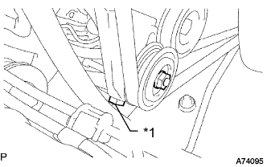
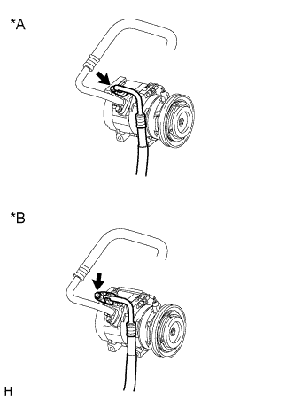
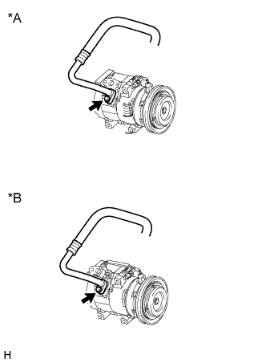
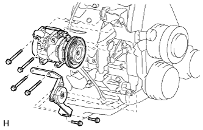

КОМПРЕССОР (для моделей с 5L-E) > СНЯТИЕ |
| 1. СНИМИТЕ ВЕРХНЕЕ УПЛОТНЕНИЕ КРОНШТЕЙНА РАДИАТОРА |
Освободите 13 фиксаторов и снимите верхнее уплотнение кронштейна радиатора.
| 2. СОБЕРИТЕ ХЛАДАГЕНТ ИЗ СИСТЕМЫ ОХЛАЖДЕНИЯ |
Запустите двигатель.
Включите компрессор системы кондиционирования в следующих условиях:
| Параметр / Устройство | Состояние |
| Частота вращения коленчатого вала двигателя | Холостой ход |
| Время работы | 3 мин или более |
| Состояние выключателя системы кондиционирования | Вкл |
| Состояние переключателя вентилятора | HI |
| Заданная температура | MAX COOL |
Выключите двигатель.
Соберите хладагент из системы кондиционирования с помощью установки регенерации хладагента.
| 3. СНИМИТЕ КРЫШКУ ВОЗДУШНОГО ФИЛЬТРА В СБОРЕ |
 |
Disconnect the sensor connector.
Detach the wire harness clamp.
Loosen the hose clamp and remove the resonator with air cleaner cap.
 |
Detach the 4 hook clamps, and then remove the air cleaner cap and resonator with air cleaner cap.
| 4. СНИМИТЕ ФИЛЬТРУЮЩИЙ ЭЛЕМЕНТ ВОЗДУШНОГО ФИЛЬТРА В СБОРЕ |
| 5. СНИМИТЕ КОРПУС ВОЗДУШНОГО ФИЛЬТРА В СБОРЕ |
 |
Remove the 3 bolts and air cleaner case.
| 6. СНИМИТЕ ПОЛИКЛИНОВОЙ РЕМЕНЬ КОМПРЕССОРА СИСТЕМЫ КОНДИЦИОНИРОВАНИЯ |
|  |
Loosen nut and adjusting bolt, and remove the V belt.
| *1 | Adjusting Bolt |
| 7. ОТСОЕДИНИТЕ ТРУБОПРОВОД ВЫСОКОГО ДАВЛЕНИЯ В СБОРЕ |
|  |
Выверните болт и отсоедините трубопровод высокого давления от компрессора.
| *A | для типа A |
| *B | для типа B |
Снимите с трубопровода высокого давления кольцевое уплотнение.
| 8. ОТСОЕДИНИТЕ ТРУБКУ НИЗКОГО ДАВЛЕНИЯ В СБОРЕ |
|  |
Выверните болт и отсоедините трубопровод низкого давления от компрессора.
| *A | для типа A |
| *B | для типа B |
Снимите с трубопровода низкого давления кольцевое уплотнение.
| 9. СНИМИТЕ КОМПРЕССОР СИСТЕМЫ КОНДИЦИОНИРОВАНИЯ В СБОРЕ |
Отсоедините разъем.
|  |
Выверните 6 болтов и снимите кронштейн опорного шкива и компрессор системы кондиционирования.